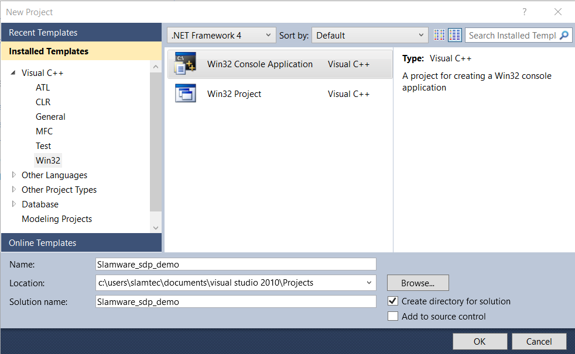

Welcome to Slamware C++ SDK
This SDK applies for both SLAMWARE navigation system and SLAMTEC Mapper.
Get Started
Download and Setup the SDK
Please visit the Support page on SLAMTEC's website to download the SDK that works for your OS platform.
File Structure
Slamware SDK contains plenty of source code files, resource, project files that eases the development cycle. These files are organized in the strucure showed below.
| Folder | Usage |
|---|---|
| bin | Precompiled utlities |
| dll | Dynamic linked SDK libraries |
| docs | Reference documentation |
| include | SDK C/C++ Header files |
| lib | Precompiled static linked libraries |
| samples | Sample Code |
| workspaces | Project files for IDE or build systems |
Header files
The header files are organized like the following in the include folder. Both the headers of SLAMWARE SDK and the required 3rd libraries are included.
| Folder | Description |
|---|---|
| boost | Boost 1.53.0 |
| Eigen | Eigen Matrix Library |
| json | JsonCpp headers |
| rpos | Slamware SDK headers |
About the Supported Platform/Hardware/Compilers
In theory, SLAMWARE SDK supports almost all hardware platforms with modern OS supports. But since there are too many platforms/OS/Compiler combinations, we only provide the pre-compiled SLAMWARE SDKs for those popular platforms/OSs/Compilers.
If another SLAMWARE SDK version is required in your case, please contact SLAMTEC support for help.
Building Environment Setup : Linux (GCC/GNU Make)
Notice: for Android/iOS, you may refer to the specific documents of the SDKs running on these platforms for details.
Notice: If you want simply integrate SLAMWARE into an ROS (Robot Operating System) environment, please download the SLAMWARE ROS SDK and refer to its documents instead.
Prerequisites
GCC and Make build systems are required to build SDK demo and applications links with the SLAMWARE SDK.
Ubuntu distribution is recommended to use, other Linux distribution can be used as well.
For Ubuntu systems, the required tools can be installed easily via the apt command:
sudo apt install build-essential
If you prefer cross-compile option, please make sure the tools used in cross compiling is to be installed.
For example, to install a cross compile gcc with version 4.8 to build binary running on ARMv7 target with hardfloat support. The following command can be used on a Ubuntu system:
sudo apt install g++-4.8-arm-linux-gnueabihf
Choose a correct SLAMWARE SDK version
SLAMWARE SDK comes with pre-compiled library binaries works on specific target GCC (glibc) version + hardware platform combinations.
The combination type of each SLAMWARE SDK package can be easily know from the file name of the SLAMWARE SDK package.
E.g. for the SLAMWARE SDK package
slamware_sdk_linux-armv7hf-gcc4.8-2.6.6_rtm.20190422.tar.bz2:
linux: the SDK is for Linux OSarmv7hf: the SDK is running on ARMv7 architecture with hard-floatpoint support enabledgcc4.8: gcc version 4.8 is used to compile the SDK code
Please make sure a correct SLAMWARE SDK is used to build your applications. Otherwise, the build process may fail, or the generated binary won't run on the target platform.
The most important part is to know the version of the gcc compiler used to build your applications and link with the SLAMWARE SDK.
get the GCC version (native build)
GCC version can be retrieved using the following command if the target application simply runs on the same platform used to build the code:
$ gcc --version
gcc (Ubuntu 4.8.4-2ubuntu1~14.04.4) 4.8.4
...
In the example above, the GCC version is 4.8
get the GCC version (cross compile)
For many cases, cross compile option is used to build target applications run on a different hardware platform/OS. A cross-compile gcc should be used and its version can be retrieved like the following:
$ arm-linux-gnueabihf-gcc --version
arm-linux-gnueabihf-gcc (Ubuntu/Linaro 4.8.4-2ubuntu1~14.04.1) 4.8.4
...
Basic Setups
Once all the prerequisites are ready, simply unpack the SLAMWARE SDK to a location you preferred.
Please make sure there is no space or other special character in the target location path in order to avoid any unexcepted building error.
For example, you may extract the SDK package to your home folder:
mkdir -p ~/slamware
tar xf slamware_sdk_linux-x86_64-gcc4.8-2.6.7_rtm.20190929.tar.bz2 -C ~/slamware/
The above shell command creates a subfolder slamware under the current user's home folder. And unpack the data of SLAMWARE SDK package slamware_sdk_linux-x86_64-gcc4.8-2.6.7_rtm.20190929.tar.bz2 into this subfolder.
In the above example, the SLAMWARE SDK is located under the path: ~/slamware/slamware_sdk_linux-x86_64-gcc4.8/
Build the sample projects
There are several sample projects included in the SDK package that can be used as a good start to learn how to use the SLAMWARE SDK. They can be found under the samples folder of the SLAMWARE SDK package.
| Sample Name | Description |
|---|---|
| map2bmp | demonstrates how to retrieve the map currently built by slamware and save it to a BMP image file format |
| mapdemo | demonstrates how to retrieve the map currently built by slamware and print out its raw data and other information of the map |
| moveandpathdemo | demonstrates how to inject a set of destination points that SLAMWARE will help a robot navigates to these points. |
To compile these samples, simply enter the samples folder and using the make command:
cd ~/slamware/slamware_sdk_linux-x86_64-gcc4.8/samples
make
If everything works as expected, you may find the compiled sample applications inside the linux-x86_64-release/output folder of the SDK.
$ cd ~/slamware/slamware_sdk_linux-x86_64-gcc4.8/linux-x86_64-release/output
$ ls
map2bmp mapdemo moveandpathdemo
Build your own application
Here we shows how to create a new application to use SLAMWARE SDK from scratch.
Setup the project folder structure of the application
To create a new application called hello_slamware under the ~/slamware folder:
cd ~/slamware
mkdir -p hello_slamware/src
The above commands setup the skeleton of the new project.
The next step, we create the main source file : main.cpp
cd ~/slamware/hello_slamware/src
nano main.cpp
Type the following source code and using [Ctrl+X] to save data and exit the editor. You may use any editor you preferred.
#include <rpos/robot_platforms/slamware_core_platform.h>
#include <iostream>
using namespace std;
using namespace rpos::robot_platforms;
int main(int argc, char * argv[])
{
SlamwareCorePlatform platform = SlamwareCorePlatform::connect("192.168.11.1", 1445);
cout << "Base version: " << platform.getSDPVersion() << endl;
return 0
}
Setup the Makefile Build Script
The makefile scripts provided by the SLAMWARE SDK can help you to ease the development cycle of building applications based on the SLAMWARE SDK.
Here we simply use the [Makefile] script under a sample project folder as a reference.
Copy the Makefile from a sample project:
cd ~/slamware/hello_slamware
cp ~/slamware/slamware_sdk_linux-x86_64-gcc4.8/samples/map2bmp/Makefile .
As the new created project doesn't locate in the same folder of the sample projects, the Makefile should be modified a bit:
nano Makefile
Using text editor to open the Makefile and change the line begins with HOME_TREE := to the following:
HOME_TREE := ../slamware_sdk_linux-x86_64-gcc4.8
The HOME_TREE := tells the build system where the SLAMWARE SDK locates.
After the modification, type CTRL+X to save the file and exit.
Then, simply type make to compile the project.
make
The compiled binary can be found under the folder: ~/slamware/slamware_sdk_linux-x86_64-gcc4.8/linux-x86_64-release/output
Notice: it is inside the SLAMWARE SDK folder.
Useful build options
If you want a debug build, using the following command instead:
make DEBUG=1
The compiled binary with debug option enabled locates under: ~/slamware/slamware_sdk_linux-x86_64-gcc4.8/linux-x86_64-debug/output
To view the detailed building process, add the V=1 parameter:
make V=1
Cross-compile Configuration or Use another GCC versions
Cross compile is possible and easy to be achieved using the build scripts provided by the SLAMWARE SDK.
Suppose the following arm-gcc cross compilers to be used to build applications working on ARM-linux targets:
arm-linux-gnueabihf-gcc-4.8arm-linux-gnueabihf-g++-4.8
Firstly, make sure a SLAMWARE SDK works for ARMv7hf targets and using GCC with version 4.8 has been downloaded.
Go to the SLAMWARE SDK folder and edit the file mak_def.inc. To change the following lines of code :
CC = gcc
CXX = g++
to
CC = arm-linux-gnueabihf-gcc-4.8
CXX = arm-linux-gnueabihf-g++-4.8
You may change other options based on your needs.
Building Environment Setup : Windows (MSVC)
SLAMWARE SDK provides the Win32 (32-bit) precompiled version based on Microsoft Visual C++. Commonly Visual Studio is required to build applications based on SLAMWARE SDK.
The following Visual Studio Versions are supported by SLAMWARE SDK:
- Visual Studio 2010 SP1 (please make sure the SP1 patch is present)
- Visual Studio 2017 (still in beta stage)
- Visual Studio 2019 (still in beta stage)
In case other versions of Visual Studio is required to be used, please contact SLAMTEC support for help.
Launch the Visual Studio IDE and open the create project window (via the File->New->Project menu).

- Choose the [Visual C++] Project template catalog, and click the [Win32 Console Application] Project type.
- Type the project you preferred in the [Name] field.
- Click the [OK] button to continue.
Project Creation Setup
Click [Next] button on the Win32 Application Wizard dialog poped up to continue.
- Make sure the [Console Application] is seletced
- Choose [Empty Project]
- Click [Finish] to create the project files.
Build Options Configurations
Open the Project Properities dialog window
Select and right-click the project item you just created in the Solution Explorer box. Click the [Properities] menu item.
Configure the VC++ Directories
Select the VC++ Directories item
- Click on the [Include Directories], a drop down button [V] will appear, click it
- Click the
menu item on the popup menu - Add the [include] path of the SLAMWARE SDK into the list and click [OK] to exit the dialog window.
- Click on the [Library Directories], a drop down button [V] will appear, click it
- Click the
menu item on the popup menu - Add the [lib] path of the SLAMWARE SDK into the list and click [OK] to exit the dialog window.
A correct configuration should look similar with the following figure:
Click the [OK] button to finish the configuration.
Build your Hello World Application
Create the source file
Select and right click on the [Source Files] folder item of your project in the [Solution Explorer]. Select [Add]->[New Item...] menu item.
Choose the [C++ File (.cpp)] item and name the new file : main.cpp
Add the source code
Type the following code into the main.cpp:
#include <rpos/robot_platforms/slamware_core_platform.h>
#include <iostream>
using namespace std;
using namespace rpos::robot_platforms;
int main(int argc, char * argv[])
{
SlamwareCorePlatform platform = SlamwareCorePlatform::connect("192.168.11.1", 1445);
cout << "Base version: " << platform.getSDPVersion() << endl;
return 0
}
Build and Run
Select the [Debug]->[Start Debugging] menu to compile and start debugging your application.
Key API Overview
| Item | Type | Description | Applies To Slamware | Applies To Mapper |
|---|---|---|---|---|
| rpos::core::Location | Class | Localtion data type | √ | √ |
| rpos::core::Rotation | Class | Rotation data type | √ | √ |
| rpos::core::Pose | Class | Robot Pose data type | √ | √ |
| rpos::core::Action | Class | Robot Action Object | √ | |
| rpos::core::ActionStatus | Enum | Several Action Working Status | √ | |
| rpos::core::Feature | Class | Features of an robot platform | √ | √ |
| rpos::core::RectangleF | Class | Rectangle object type in float | √ | √ |
| rpos::core::Vector2f | Class | 2D vector object type in float） | √ | √ |
| rpos::core::Vector2i | Class | 2D vector object type in int | √ | √ |
| rpos::core::LaserPoint | Class | LIDAR Scan points data | √ | √ |
| rpos::core::RobotPlatform | Class | Base class of a robot object | √ | √ |
| rpos::actions::MoveAction | Class | Move Motion Action object | √ | |
| rpos::actions::VelocityControlMoveAction | Class | Direct motion control action based on velocity | √ | |
| rpos::feature::motion_planner::MoveOptionFlag | Enum | Movement types of MoveAction | √ | |
| rpos::feature::motion_planner::MoveOptions | Struct | Movement types of MoveAction | √ | |
| rpos::features::ArtifactProvider | Class | Virtual Walls, Virtual Tracks, etc | √ | |
| rpos::features::LocationProvider | Class | Provides localization functions | √ | √ |
| rpos::features::MotionPlanner | Class | Provides motion path planning services | √ | |
| rpos::features::SystemResource | Class | Retrieves SLAMWARE system info | √ | √ |
| rpos::features::location_provider::Map | Class | Map data object | √ | √ |
| rpos::features::location_provider::MapType | Enum | Defines different types of Maps | √ | √ |
| rpos::features::location_provider::BitmapMap | Class | Map represents in Bitmap | √ | √ |
| rpos::features::location_provider::BitmapMapPixelFormat | Enum | The pixel format used by a BitmapMap | √ | √ |
| rpos::features::motion_planner::Path | Class | Motion Path data object | √ | |
| rpos::features::system_resource::LaserScan | Class | LIDAR Scan Object | √ | √ |
| rpos::robot_platforms::SlamwareCorePlatform | Class | Slamware CORE Object | √ | √ (Partial) |